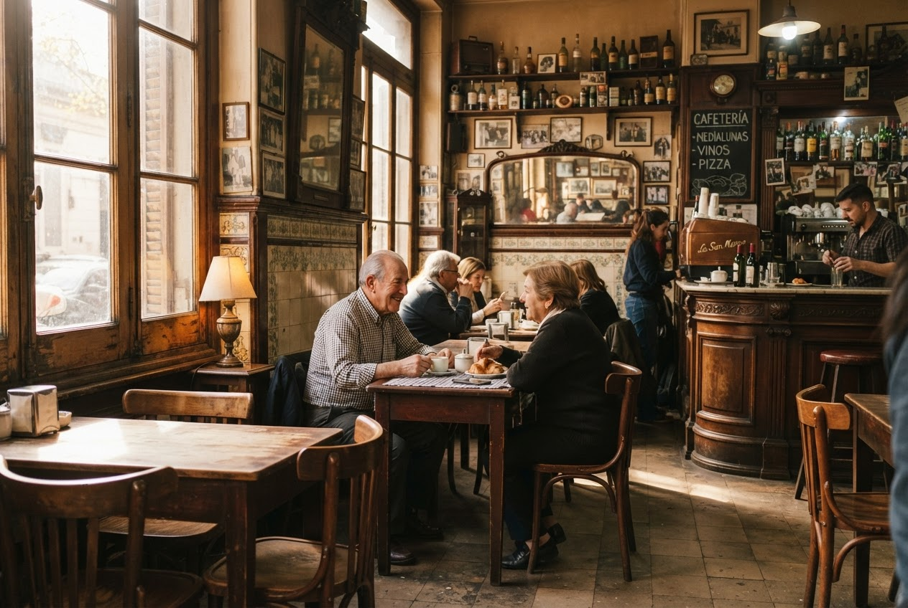
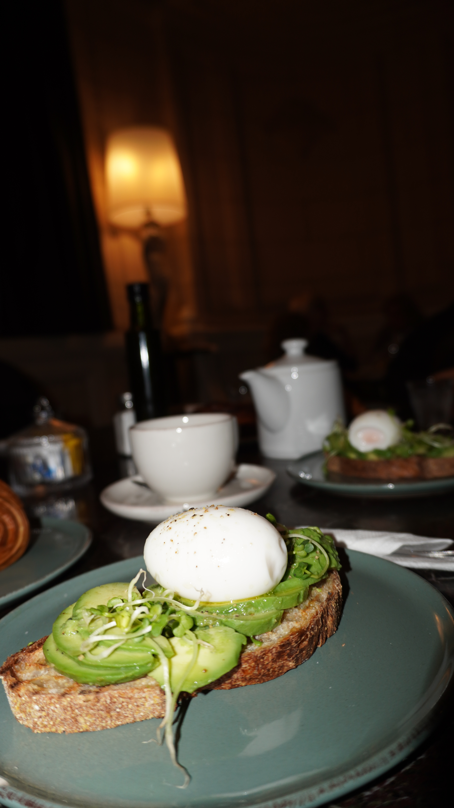
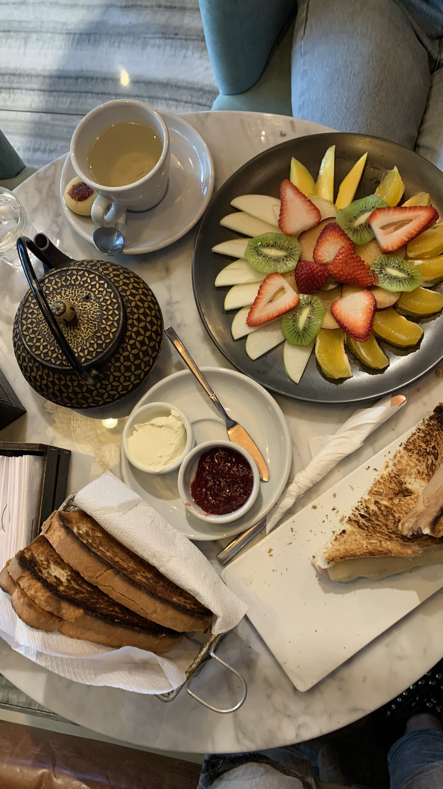

Cuándo ir
Preferí las horas de luz para las caminatas. Antes de salir, consultá los horarios oficiales de cada espacio y la programación del día.
GASTRONOMÍA
Sabores tradicionales que narran corrientes migratorias, sobremesas eternas y bodegones reinventados con amor local.
Empezar a recorrer

Sabores de la ciudad
La mesa porteña no tiene apuros. Esta propuesta de parada destacada incluye cafés, tostados, pastelería y mesas completas para compartir.

Los nombres “Lugar 1” a “Lugar 5” se conservan del prototipo para el review de contenido.
Establecimiento clásico porteño · Visita sugerida
La histórica estructura de hierro forjado de 1897. Antigüedades, vegetales frescos y puestos de café.
Abrir información de Lugar 1Ubicación: Nombre y dirección pendientes del review.
Experiencia: Recorrido cultural, observación del entorno y visita al espacio cuando esté habilitado.
Acceso y horarios: Para ingresar, consultá la programación, los horarios y las entradas del establecimiento antes de salir. La planificación de Porteña no incluye entradas ni consumos.
Esta parada conserva el contenido del prototipo. Su ubicación se completará después del review.
Establecimiento clásico porteño · Visita sugerida
Una esquina rosada de ensueño donde el vermú mendocino y la mejor milanesa porteña se abrazan.
Abrir información de Lugar 2Ubicación: Nombre y dirección pendientes del review.
Experiencia: Recorrido cultural, observación del entorno y visita al espacio cuando esté habilitado.
Acceso y horarios: Para ingresar, consultá la programación, los horarios y las entradas del establecimiento antes de salir. La planificación de Porteña no incluye entradas ni consumos.
Esta parada conserva el contenido del prototipo. Su ubicación se completará después del review.
Establecimiento clásico porteño · Visita sugerida
Un escondite diminuto famoso por sus empanadas salteñas de masa crujiente y repulgue perfecto.
Abrir información de Lugar 3Ubicación: Nombre y dirección pendientes del review.
Experiencia: Recorrido cultural, observación del entorno y visita al espacio cuando esté habilitado.
Acceso y horarios: Para ingresar, consultá la programación, los horarios y las entradas del establecimiento antes de salir. La planificación de Porteña no incluye entradas ni consumos.
Esta parada conserva el contenido del prototipo. Su ubicación se completará después del review.
Establecimiento clásico porteño · Visita sugerida
Confitería emblemática del barrio de Almagro, famosa por sus imponentes vitrales y tarde de té real.
Abrir información de Lugar 4Ubicación: Nombre y dirección pendientes del review.
Experiencia: Recorrido cultural, observación del entorno y visita al espacio cuando esté habilitado.
Acceso y horarios: Para ingresar, consultá la programación, los horarios y las entradas del establecimiento antes de salir. La planificación de Porteña no incluye entradas ni consumos.
Esta parada conserva el contenido del prototipo. Su ubicación se completará después del review.
Establecimiento clásico porteño · Visita sugerida
Una pausa final con sifón de soda tradicional sobre la vereda templada del barrio de moda.
Abrir información de Lugar 5Ubicación: Nombre y dirección pendientes del review.
Experiencia: Recorrido cultural, observación del entorno y visita al espacio cuando esté habilitado.
Acceso y horarios: Para ingresar, consultá la programación, los horarios y las entradas del establecimiento antes de salir. La planificación de Porteña no incluye entradas ni consumos.
Esta parada conserva el contenido del prototipo. Su ubicación se completará después del review.
Preferí las horas de luz para las caminatas. Antes de salir, consultá los horarios oficiales de cada espacio y la programación del día.
Subte, colectivo y caminata. Combiná los tramos según tu ritmo y llevá tu tarjeta SUBE para los traslados.
Calzado cómodo, botella de agua y espacio para la sorpresa. Respetá las obras, los vecinos y los espacios que visites.